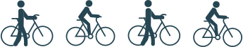
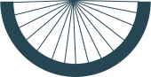
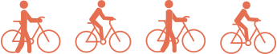

Gelegen in Nieuwland is de Fietskliniek. De plek om je fiets goedkoop te laten repareren!
Met alle liefde en passie helpen de vrijwilligers van de fietskliniek je bij het maken van je fiets. Dat ook nog voor een erg goedkope prijs én met tweedehands spullen!
de DIY avond
Elke dinsdag en donderdag is er een DIY avond! Hierbij kun je met de onderdelen van de fietskliniek je eigen fiets repareren. Dit allemaal tegen een kleine donatie.
Ik ben zelf naar een van de DIY avonden geweest en ook al ga je er natuurlijk alleen heen om je fiets te maken, is het echt een super fijne sfeer. Daarnaast krijg je er ook nog een fijn gevoel van omdat, naast dat je dus het leuk hebt gehad, ook nog goed bezig bent voor de wereld!
Eerstvolgende DIY avond:
DONDERDAG 25 januari
16.00 tot 21.00
